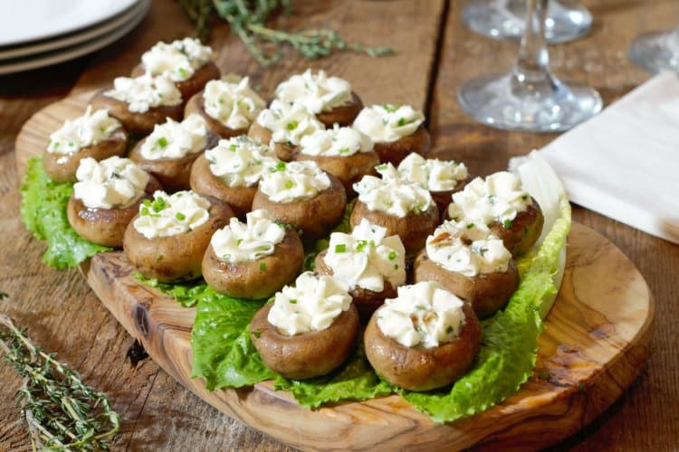

Goat Cheese Stuffed Mushrooms

Freshyly baked goat cheese stuffed mushrooms.
Really delicious comfort food perfect for any occasion and any cheese lover.
Ingredients
- Mushrooms - 5oz
- Shallot (purple) - 1 small
- Goat Cheese - 4oz
Steps
- Preheat oven to 425 degrees fahrenheit.
- Finely chop shallot and mix with goat cheese.
- Bcoop and press mixture into cleaned and de-stemmed mushrooms.
- Bake for 15 minutes or until tops of goat cheese become toasty brwon.